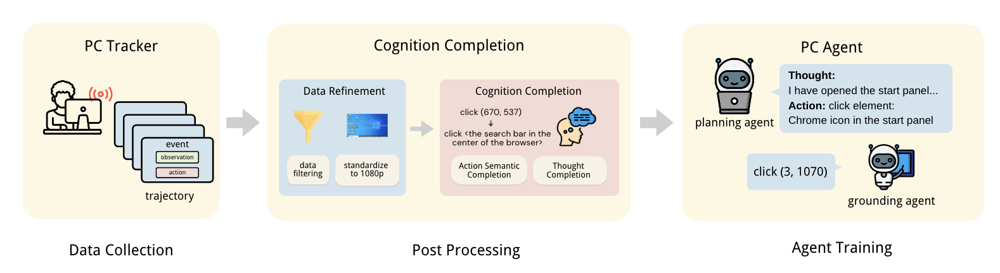

Demo 1: Make a presentation for Attention is All You Need
Demo 2: Make a presentation for Nobel Prize in Physics 2024
Demo 3: Make 11 posters for Turing Award Winners
Demo 4: Use Claude to build a website for PC Agent
Imagine a world where AI can handle your work while you sleep - organizing your research materials, drafting a report, or creating a presentation you need for tomorrow. However, while current digital agents can perform simple tasks, they are far from capable of handling the complex real-world work that humans routinely perform. We present PC Agent, an AI system that demonstrates a crucial step toward this vision through human cognition transfer. Our key insight is that the path from executing simple "tasks" to handling complex "work" lies in efficiently capturing and learning from human cognitive processes during computer use. To validate this hypothesis, we introduce three key innovations: (1) PC Tracker, a lightweight infrastructure that efficiently collects high-quality human-computer interaction trajectories with complete cognitive context; (2) a two-stage cognition completion pipeline that transforms raw interaction data into rich cognitive trajectories by completing action semantics and thought processes; and (3) a multi-agent system combining a planning agent for decision-making with a grounding agent for robust visual grounding. Our preliminary experiments in PowerPoint presentation creation reveal that complex digital work capabilities can be achieved with a small amount of high-quality cognitive data - PC Agent, trained on just 133 cognitive trajectories, can handle sophisticated work scenarios involving up to 50 steps across multiple applications. This demonstrates the data efficiency of our approach, highlighting that the key to training capable digital agents lies in collecting human cognitive data. By open-sourcing our complete framework, including the data collection infrastructure and cognition completion methods, we aim to lower the barriers for the research community to develop truly capable digital agents.
If you have any questions regarding this project, feel free to directly submit a github issue.
@article{pcagent,
title={PC Agent: While You Sleep, AI Works - A Cognitive Journey into Digital World},
author={},
journal={},
year={2024}
}